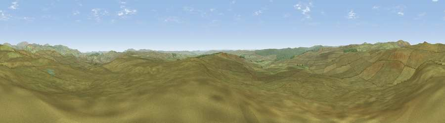

Viewpoint near Rochester
#9458 in England · top 29% of its area beats it · near Rochester · access?Where it is
The exact computed spot (NT 84375 03150). Click the marker for map links.
Public access: no public right of way or access land is recorded at this exact spot — it may be on private land. Computed from Natural England's CRoW access layer and OpenStreetMap rights of way — not the legal definitive map. Always verify locally.
The view, rendered

A 360° render of this exact spot computed from the terrain model, tree cover and land cover — summer colours, afternoon light, calibrated against photographs of famous viewpoints. Real trees, hedges and buildings will differ in detail.
The panorama
Grey silhouette: terrain skyline in each direction (720 bearings, Earth curvature and refraction included). Dashed green: skyline with trees (+15 m) and buildings (+8 m) as obstacles. Blue strip: how far the ground is visible on each bearing.
Where the view opens
Wedge length = distance to the farthest visible ground on that bearing (vegetation-aware). Rings at 10, 25 and 50 km.
What fills the view
96% grassland · 4% woodland
Angular shares of the visible panorama (visual magnitude), not map area. Landscape diversity 0.08 (0–1 Shannon).
Key numbers
More beautiful places nearby
The staircase of upgrades: each row has a higher view potential than everything closer. Driving times are estimates from straight-line distance, calibrated against real road routing — check an actual route before setting out.
| Place | Direction | Drive | Score |
|---|---|---|---|
| Viewpoint c12086_7685 | N · 1 km | ~3 min | 65.9 |
| Viewpoint near Rochester | S · 2 km | ~5 min | 66.4 |
| Viewpoint near Byrness | W · 5 km | ~11 min | 73.3 |
| Thirl Moor | NW · 6 km | ~14 min | 77.2 |
| Windy Gyle | N · 12 km | ~23 min | 79.7 |
| Wether Cairn [Wholhope Hill] | NE · 13 km | ~24 min | 80.7 |
| Viewpoint c12273_7856 | NE · 13 km | ~25 min | 83.7 |
| Viewpoint c12396_7887 | NNE · 20 km | ~33 min | 85.7 |
55.32217, -2.24778 · source: screening · position refined by local search. Computed location — check access rights before visiting.